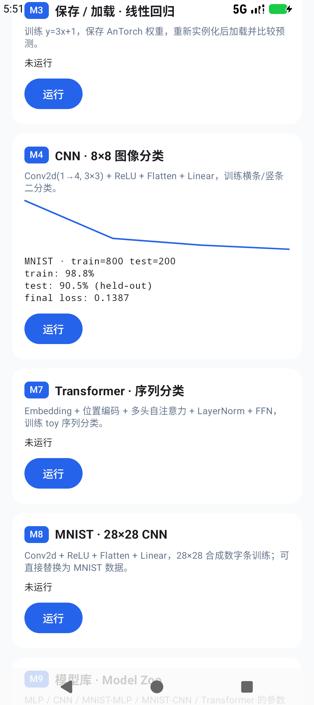

手机上的
深度学习训练框架
AnTorch 用 Kotlin 实现 Tensor、自动微分、模型与优化器，用 C++/JNI + OpenMP 加速核心 kernel。支持 FLOAT16/INT8/INT32/INT64，内置 MLP、CNN、Transformer， 并在设备本地完成训练、保存与用户输入推理。

真实 MNIST：800 张训练 / 200 张 held-out 测试，4 epochs 后 test accuracy 90.5%。
从 Tensor 到完整训练闭环
M1–M9 全部可运行；JNI 不可用时自动回退 Kotlin，JVM 单测与 Android 共用一套 API。
类型化 Tensor
FLOAT16/FLOAT32/INT8/INT32/INT64，reshape、转置、广播、matmul，动态计算图反向传播。
常见模型
Linear、Conv2d、LayerNorm、Embedding、MultiHeadAttention、TransformerBlock，以及 MLP/CNN/MNIST/Transformer 模型库。
现代优化器
SGD、Adam、AdamW、RMSprop、Adagrad、Adamax、Lion；Step/Exponential/Cosine 调度器。
更多损失函数
MSE、CrossEntropy、BCEWithLogits、Huber、SmoothL1、Focal、NLL、LabelSmoothing。
OpenMP 原生 kernel
matmul、逐元素、转置、ReLU/Sigmoid/Tanh、softmax、sum、Conv2d 全部走 JNI；Kotlin 自动回退。
训练到推理
协程 Trainer、检查点、ModelIO v2；Demo 支持手写数字画布与短信文本输入，直接调用训练后的模型。
一个 APK，完整 Demo
M1 自动微分、M2 Iris、M3 保存/加载、M4 MNIST、M5 JNI、M6 基准、M7 SMS Transformer、M8 held-out、M9 模型库。
真实小数据集，不是玩具
Iris 150 条、MNIST 2,000 训练 + 500 测试、SMS Spam 1,200 条。训练与测试分开，界面直接显示 held-out accuracy。
用户输入调用模型
在 28×28 画布上写数字，点击预测调用刚训练的 CNN；输入短信文本，调用训练后的 Transformer 判断 spam/ham。
快速开始
JitPack 依赖 + 一个训练循环；完整 API 见 GitHub docs。
implementation("com.github.trueWangSyutung:AnTorch:0.1.0")val model = Sequential(
Linear(784, 128), ReLU(), Linear(128, 10)
)
val optimizer = Adam(model.parameters, learningRate = 1e-3f)
Trainer.train(
model = model,
dataset = mnist,
loss = CrossEntropyLoss(),
optimizer = optimizer,
config = TrainConfig(epochs = 4, batchSize = 32)
) { stats ->
println("epoch=${stats.epoch} loss=${stats.loss} acc=${stats.accuracy}")
}真实数据集
| 数据集 | 用途 | 规模 |
|---|---|---|
| Iris | 表格分类 | 150 行 · 4 特征 · 3 类 |
| MNIST | 手写数字 | 2,000 训练 + 500 测试 · 28×28 |
| SMS Spam | 文本分类 | 1,200 条 · 161 spam |
数据来源与许可见 datasets/README.md。
JNI + OpenMP
大多数热点算子使用 C++17 实现，OpenMP 并行；Tensor 在 FLOAT32 且规模足够时自动走原生路径。
矩阵与逐元素
matmul、add/sub/mul/div、scalar、transpose。
激活与归一化
relu、sigmoid、tanh、softmax、sum。
卷积
Conv2d 前向，OpenMP collapse 并行。